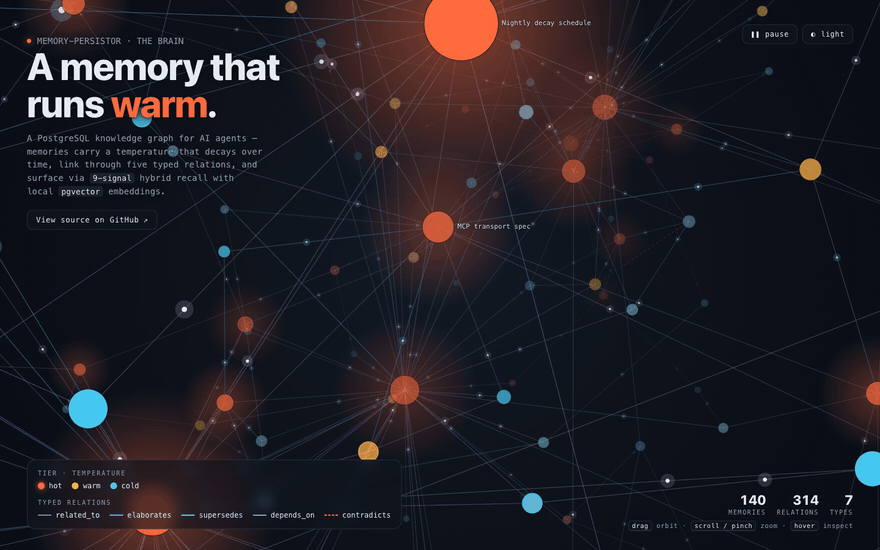
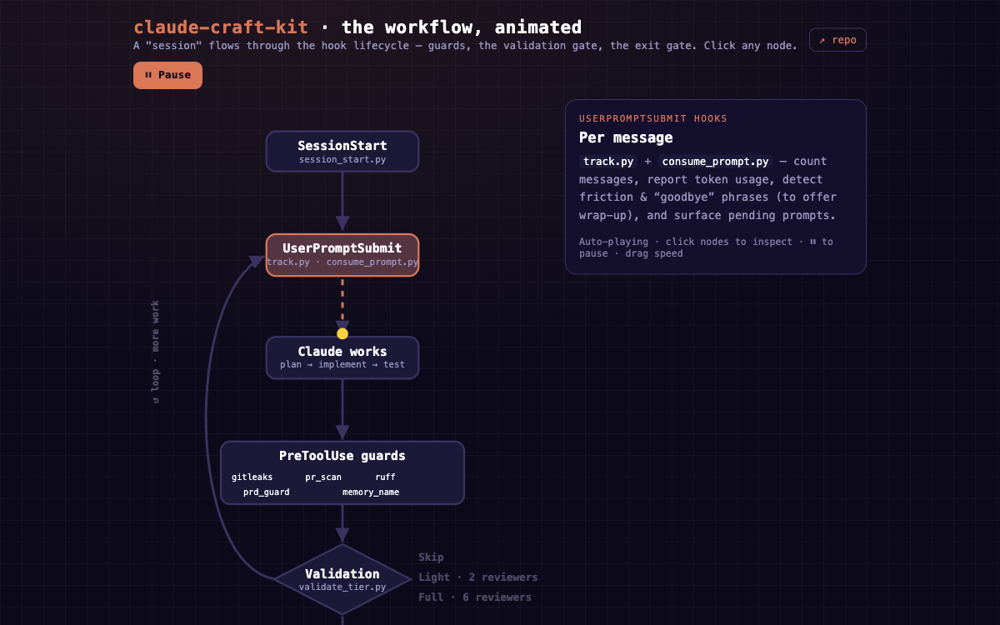
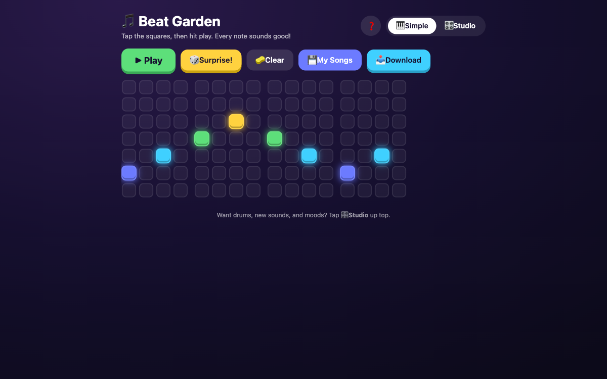
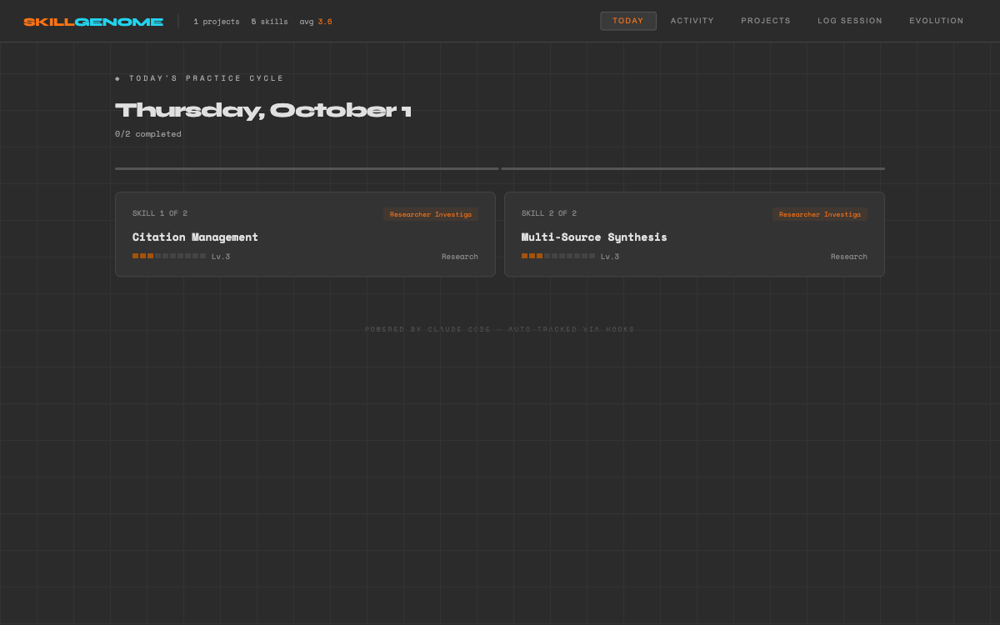

live demo
live democodeberg-mcp
An MCP server for Codeberg, Gitea and Forgejo with 49 tools across repos, PRs, issues, releases and Actions. Works with several accounts at once.
PythonMCPForgejo API
investigator-researcher
A Claude Code skill for deep research. It writes a structured markdown report and checks every citation URL, marking each one verified, unverified or broken.
PythonClaude Code skillMCP
ci-workflows
Generates CI templates for Forgejo/Gitea and GitHub Actions. Write a pipeline once, then sync it to every repo that uses it.
PythonGitHub ActionsForgejo

live democaddy-stack
A Caddy reverse-proxy template that gives internal homelab services real HTTPS names, deployed with Docker Compose.
CaddyDocker Composehomelab
astroshell-lcd
A small daemon that draws live hardware stats on a 320×240 USB-serial LCD. Runs under systemd on a Raspberry Pi.
PythonPillowRaspberry Pi

live demo